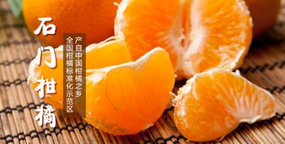
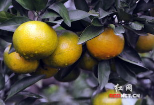
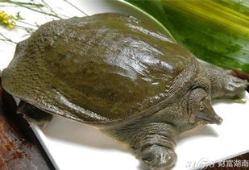
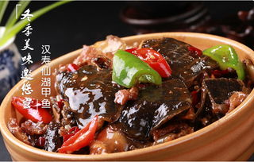
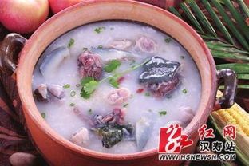
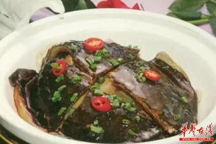

柑橘，是石门的“名片”。新中国成立60周年之际，石门柑橘以丰硕的成果回馈共和国花甲华诞：四条“百里柑橘走廊”蔚为壮观， 十大“万亩橘园”气势恢宏，二百二十个专业村星罗棋布，每年五亿元以上产值富民强县，“中国柑橘之乡”、“中国早熟蜜橘第一县”、 “全国柑橘标准化示范区”、“中华名果”、“全国园艺产品（柑橘）石门的橘子红了出口示范区”、“全国柑橘优势农产品区域重点县” 等荣誉熠熠生辉……六十年风雨兼程，六十年厚积薄发，六十年茁壮成长，石门柑橘愈发“枝繁叶茂”。
江南有丹橘，石门尤为盛。作为中国柑橘之乡、全国早熟蜜橘第一县的石门，今年柑橘种植面积达46万亩，产量预计超45万吨，销售收入可达15亿元。石门柑橘被评为“中华名果”，并获国家地理标志商标，远销加拿大、俄罗斯、欧盟等19个国家和地区。 近年来，柑橘作为石门农业第一大产业，助推脱贫攻坚作用日益明显。今年6月，石门县通过考核验收，摘掉了贫困县的帽子。
石门是柑橘种植大县，全县有30万橘农赖以生存。连续15年来举办的柑橘节，以橘为媒，以节兴业，以节活县，走出了一条新的路径，已经成为招揽四海三河、迎接八方宾朋的盛会，成为奏响石门柑橘品牌，弘扬石门柑橘文化的平台，成为打开石门之门，促进开放兴县的名片。同时，石门柑橘节不仅成为外地人领略石门风光，体验土家文化的节日，也已经成为石门人展示风采，释放激情而又不可忘记、不可舍弃的自己的日子。
汉寿甲鱼，湖南省汉寿县特产，中国国家地理标志产品。汉寿县地处湘北的洞庭湖畔，自古就有“鱼米之乡”的雅称，甲鱼的人工养殖更是在全国首开先河，荣获国家“甲鱼之乡”美称。汉寿甲鱼属于正宗的中华鳖，被湖南省认定为优良品种，与其他甲鱼品种相比，汉寿甲鱼具有体薄片大，裙边宽而厚，腹内脂肪呈蛋黄色；体质健壮，爬行灵活，免疫力强，生长速度快，成活率高。食用时，其肉质纯正，细嫩鲜美，有嚼味，其营养价值和药用价值也优胜于其他种群。
/>汉寿，是一颗镶嵌在洞庭西滨的璀璨明珠。物华天宝，人杰地灵。素有“千湖之县”之名，又有“鱼米之乡”之称。 改革开放的春风，吹醒了这片古老的神奇土地。从此，吸引人们眼球的新鲜事物层出不穷，神话般的传奇故事时有发生，甲鱼产业创造的全国乃至世界之最不断刷新。汉寿，在人们心目中大名鼎鼎，令人心向神往。 汉寿，孕育了“中华养鳖第一人”的诞生。没有游洪涛的努力，哪来千万个养鳖人的成长；
汉寿，第一个向世界宣告人工养鳖的成功，没有这里经验的推广，哪来今天（2015年）全国35万吨甲鱼的产量； 汉寿，中国甲鱼最早走出国门，1975年冬即为荷兰女王加冕典礼提供二吨甲鱼。没有汉寿首个揭取这张国际榜的勇气，世界上哪有咱中国甲鱼的梦想； 汉寿，我国最早（1994年）荣获“中国甲鱼之乡”的殊荣。没有汉寿这个榜样的引领，哪来连续五届“中国名鳖”的荣耀； 汉寿，中国县级政府中第一个设立“甲鱼办”常设机构。没有象汉寿县这样各级政府的大力支持，哪有中国甲鱼今天的辉煌； 汉寿，为了甲鱼产业健康发展，发出了“汉寿宣言”。没有这个倡仪，我国甲鱼产业怎能得到可持续健康发展；
汉寿，有“鳖王”王业春创建的我国第一个甲鱼市场——汉寿甲鱼综合市场。有了市场的引领，才能加快实现我国甲鱼产业产、供、销一体化的进程； 汉寿，是我国天然富硒甲鱼的发祥地。没有“天然富硒甲鱼出汉寿”的影响，怎能引来全世界关注中国的目光、 这一切的一切，不是简单的数字罗列，而是汉寿人勤奋和智慧的结晶；这一切的一切，不是流水帐的记录，而是汉寿人发展我国甲鱼产业创造的丰功伟绩；这一切的一切，更不是美丽文字描写，而是汉寿甲鱼发展的光辉里程。 在此：我为汉寿的甲鱼人而骄傲！ 我为汉寿的甲鱼产业而自豪！
